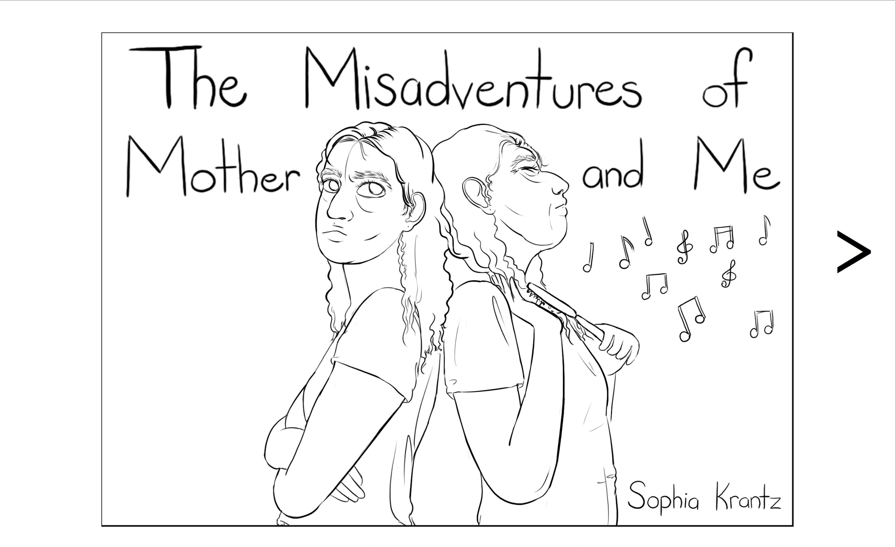

Website Design, Book Design, and Webcomic
April 2021
The Misadventures of Mother and Me is a choose-your-own-adventure virtual graphic novel that follows a woman attempting to reconcile her emotionally abusive relationship with her mother. The graphic novel is permanently hosted online rather than printed so as to allow visitors to interact with the site and add images to the panels as well as to prevent individuals from flipping straight through the book without reading each of the choices.